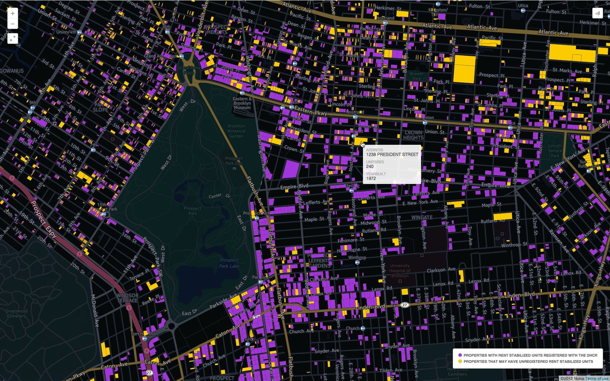
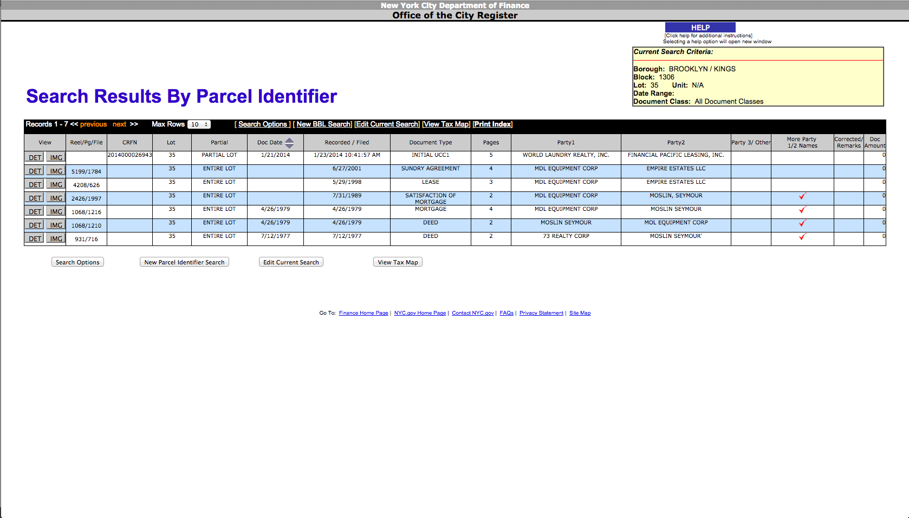
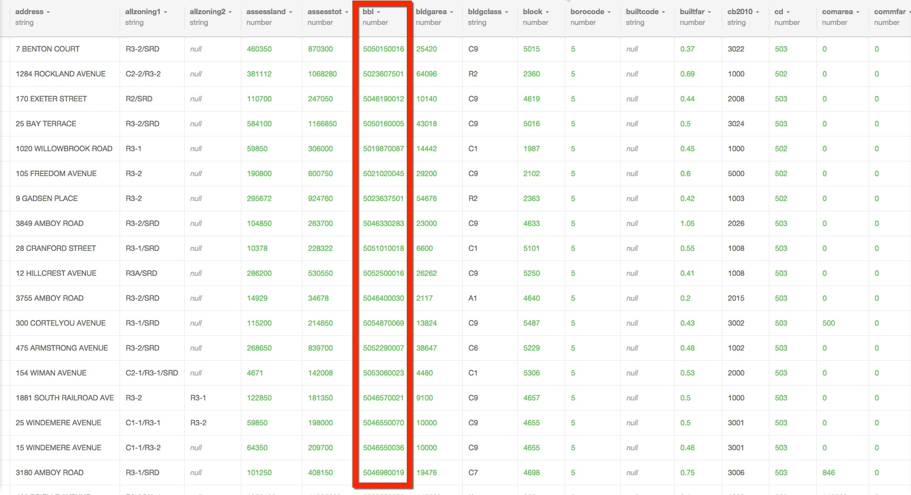
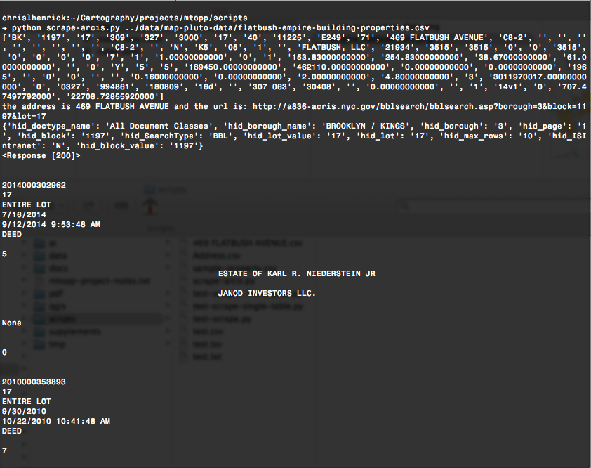

Narratives of Displacement
Chris Henrick
Question:
How can D&T be used to spread awareness around issues of affordable housing and displacement in NYC?
Concept:
Open Data + Narrative -> web doc
Research & Process
Problem:
Disconnect between city planners & NYC residents.
Problem:
Developers have too much political power and don't address community concerns.
Problem:
Landlords easily get away with illegal practices such as tenant harassment.
Problem:
Most tenants aren't aware of their rights.
Problem:
Gentrification
Displacement
Prototypes
Goals:
One: Educate tenants about their rights around rent regulation.
Goals:
Two: Motivate tenants to take action to protect themselves.




Research:
Tenants rights groups need access to and knowledge of this data.
Research:
Access to & use of government data on NYC properties is not user friendly.

http://nyc-property-extractor.clhenrick.io
Goal:
To simplify and improve access to open data on NYC properties.
Moving Forward
Goals:
One:Utilize open data to garner civic action to combat displacement.
Goals:
Two:Incorporating personal narratives of those affected by displacement.
Final Deliverable
An interactive media piece for the web.
Status:
- Collaborating with community orgs.
- Starting to mock up design for the site.
Questions?
1. Best ways to create an empathetic response from the user?
2. Other precedents you've seen for interactive documentaries and journalism on the web?
3. Web apps that you've found very useful for solving problems?
4. Graphic Design and UI/UX design are not my forté, advice?
end.